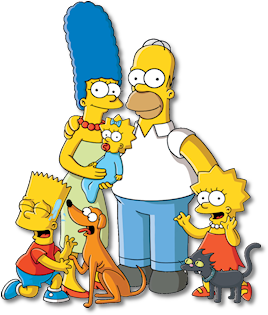

JQuery UI Accordion and Tab
The Simpsons are a family who live in Springfield (maybe even the Springfield in your state).
A lovable buffoon.
A loving mother and wife.

A ten-year-old troublemaker.

A precocious eight-year-old activist.

The baby of the family who rarely speaks, but communicates by sucking on a pacifier.